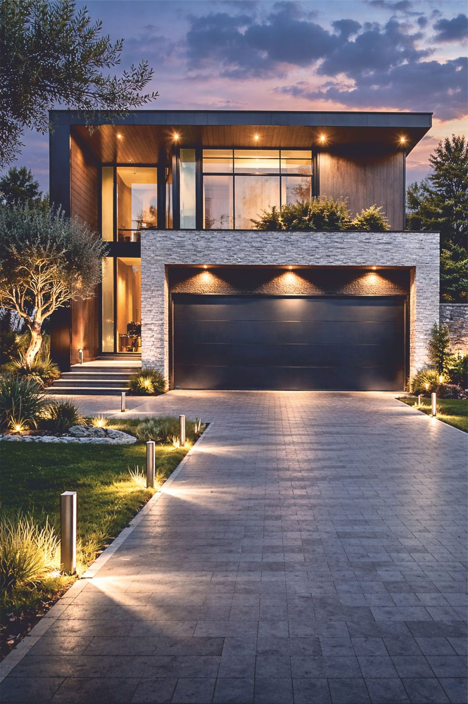
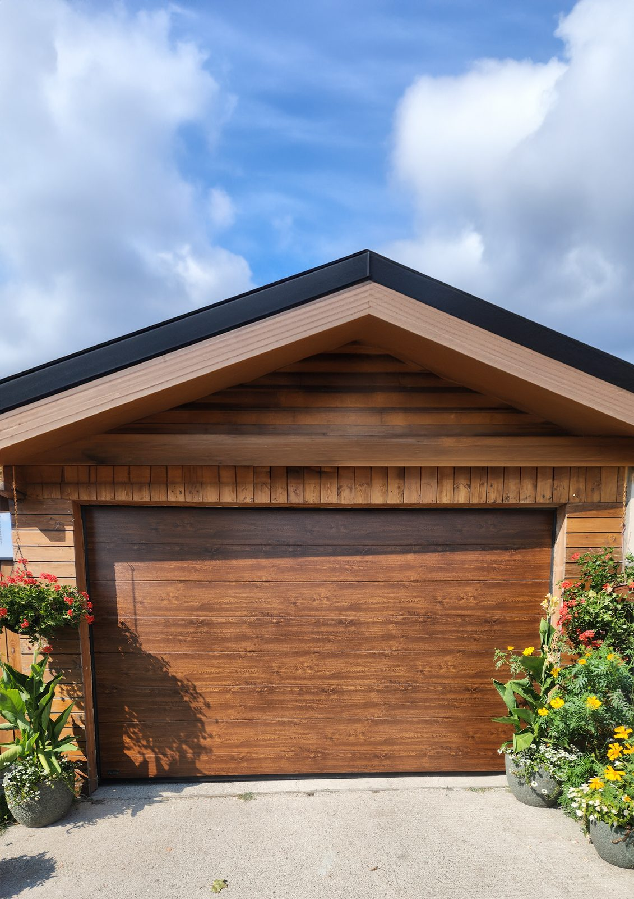
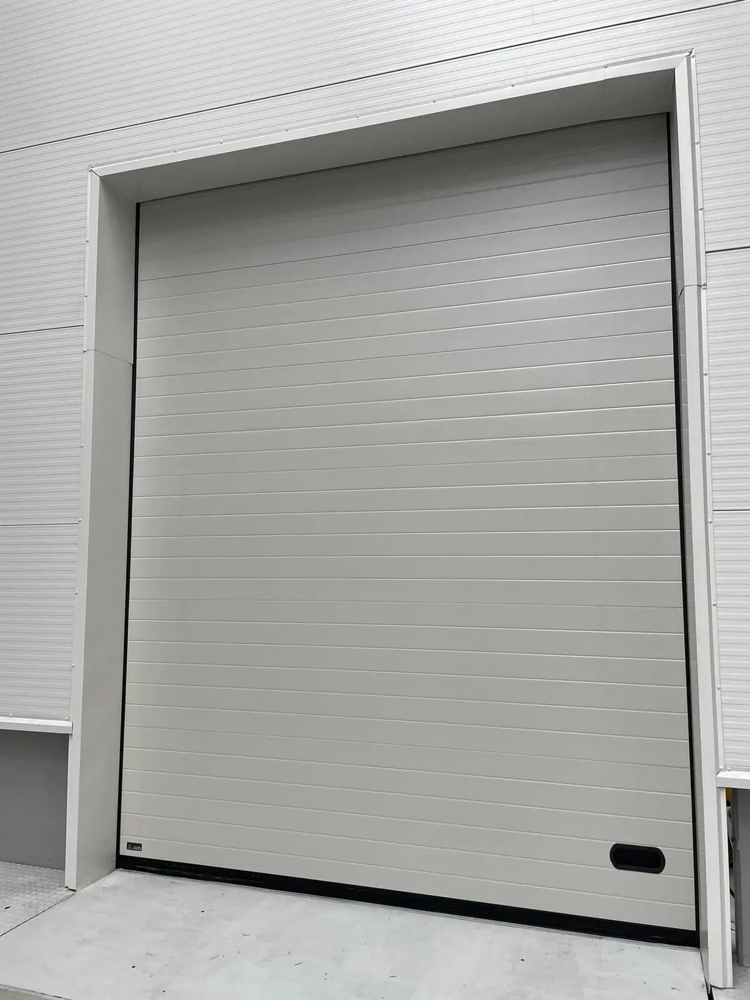
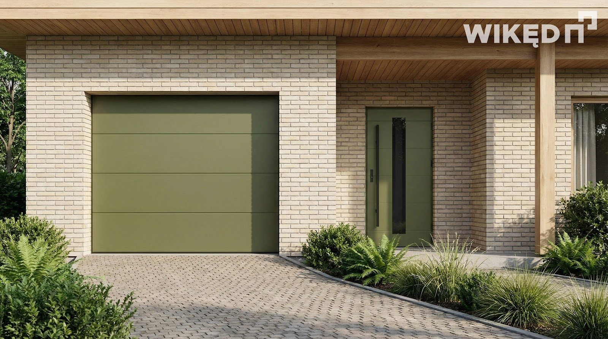

AVO
- Panele Woodgrain i Silk; dekory Woodec, Winchester, Złoty Dąb
- Lakierowanie: 205 kolorów RAL i 1950 NCS
- Automatyka ADO / ADO PRO: 24 V, LED w prowadnicy, KUBE Bluetooth
- Prowadzenie także przy bardzo krótkich podjazdach

Bramy segmentowe (panel 40–60 mm z pianką PU) i roletowe, z napędami Nice / Somfy.


Zabezpieczenie przed pęknięciem sprężyn i opadnięciem bramy
Panel 40–60 mm z pianką poliuretanową
Nice / Somfy: pasek kevlarowy, amperometryka, aplikacja




| Model | Powierzchnia | Charakter |
|---|---|---|
| AVO Base Line / Base Trend / Base Elegant | Woodgrain | ekonomiczne, struktura drewna |
| AVO Line | Woodgrain | klasyczne przetłoczenia |
| AVO Trend / Elegant | Silk (gładka) | nowoczesne elewacje |
| AVO Elegant ISO 60 | Silk | panel 60 mm — najwyższa termika |
Umów bezpłatną wizytę naszego eksperta na Twojej budowie. Precyzyjnie zmierzymy otwory, doradzimy technicznie i przygotujemy kalkulację cenową.